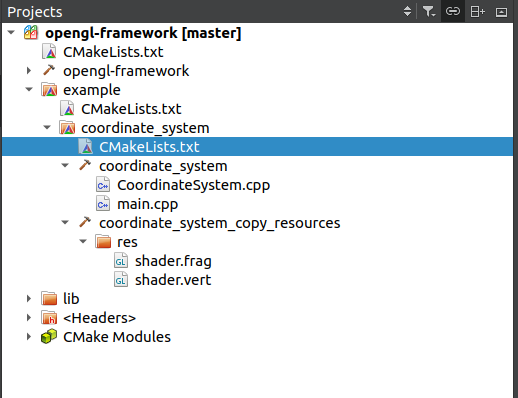
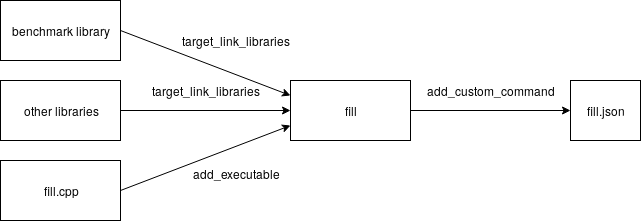

Custom Commands and Custom Targets¶
Sometimes you need to do some tasks before the build or after the build, like
- runnning protocol buffer compiler to generate stubs before the actual build
- running moc on header files
- copying the resource files to a predefined path.
You can assume these as custom targets and you can write custom commands to do these things. CMake provides add_custom_target and add_custom_command to do these tasks.
CMake targets¶
CMake allows three types of targets
- generates an execuatable(
add_executable) - generates a library(
add_library) - a custom target(can be anything)
CMake generates a dependency graph for every target. If a target depends on another target, cmake makes sure the other targate is generated before. However, you can always cmake to build a specific target.
Unlike executable and libraries, custom target don't represent a thing.
add_custom_target¶
add_custom_target(targetName [ALL] [command1 [args1...]] [COMMAND command2 [args2...] ...] [DEPENDS depend depend depend ... ] [BYPRODUCTS [files...]] [WORKING_DIRECTORY dir] [COMMENT comment] [JOB_POOL job_pool] [VERBATIM] [USES_TERMINAL] [COMMAND_EXPAND_LISTS] [SOURCES src1 [src2...]])
targetName is the new target name. You can run the target using the following command.
cmake . --build --target targetName
ALL option makes the ALL target depend on the targetName. By default ALL target is built if nothing is specified. By making ALL depend on this target, we make this target to be built. Otherwise you have to explicitly request a build. Or, it will be built if some other target depends on this. Custom targets are always built(always out of date). So, if some other target depends on this, that other target will always be built.
The next arguments are one or more commands with their arguments. You can skip the COMMAND keyword for the first command. Commands are the good old commands which can be executed. The order is always the order in which it is specified. CMake provides some predefined command which can be usec by ${CMAKE_COMMAND} -E (cmake in command mode). ${CMAKE_COMMAND} is the cmake command which is used to invoke this project. This way of invoking cmake command makes sure that wrong cmake is not invoked.
It's recommended to use ${CMAKE_COMMAND} -E to call cmake provided commands. It's more platform independent.
add_custom_target(target1 ALL COMMAND ${CMAKE_COMMAND} -E echo "This is command 1" COMMAND ${CMAKE_COMMAND} -E echo "This is command 2" COMMAND ${CMAKE_COMMAND} -E echo "This is command 3" )
Output
This is command 1 This is command 2 This is command 3
DEPENDS argument will take one or more targets. This will always create a target level dependency. These targets will be built before the current target.
add_custom_target(target1 COMMAND ${CMAKE_COMMAND} -E echo "This is target1" ) add_custom_target(target2 COMMAND ${CMAKE_COMMAND} -E echo "This is target2" ) add_custom_target(target3 ALL COMMAND ${CMAKE_COMMAND} -E echo "This is target3" DEPENDS target1 target2 )
Output
This is target2 Built target target2 This is target1 Built target target1 This is target3 Built target target3
BYPRODUCTS are the list of files expected to be generated. These are marked as GENERATED. This tells CMake not to check for its existence at configure time, since it gets created as part of the build process. This is useful if you have targe which needs a GENERATED file from another custom target. CMake will not check the existence during configuration phase.
WORKING_DIRECTORY is the directory where the commands are generated. If this option is not given, the commands will be run in ${CMAKE_CURRENT_BINARY_DIR}.
COMMENT is the message which will be shown in the console before the targetName is built.
JOB_POOL is optional and I have no clue what it is.
SOURCES option has no role in the build process. Any files mentioned here will be shown in the IDE. If you have a custom command which copies some shader files to a specific path, you can add those files in the SOURCES. Then IDE will show the files in the project tree.
Some header only libraries also use custom command to show the header files in the project
set(HEADER_BASE "${CMAKE_CURRENT_SOURCE_DIR}/external/stringify") file(GLOB_RECURSE stringify_include_SRCS "${HEADER_BASE}/*.hpp") add_custom_target(stringify_headers_for_ide SOURCES ${stringify_include_SRCS})
VERBATIM:
Example 1: copy resource files after build¶
I have some vertex and fragment shader, which are in current source directory.
.
├── CMakeLists.txt
├── CoordinateSystem.cpp
├── CoordinateSystem.h
├── main.cpp
└── res
├── shader.frag
└── shader.vert
I need to copy the resource files in res folder to the binary folder.
set(TARGET_NAME coordinate_system) add_executable(${TARGET_NAME} CoordinateSystem.cpp main.cpp ) target_link_libraries(${TARGET_NAME} PRIVATE opengl-framework) set(RES_FILES "${CMAKE_CURRENT_SOURCE_DIR}/res/shader.frag" "${CMAKE_CURRENT_SOURCE_DIR}/res/shader.vert" ) add_custom_target(${TARGET_NAME}_copy_resources ALL COMMAND ${CMAKE_COMMAND} -E copy_if_different ${RES_FILES} ${CMAKE_CURRENT_BINARY_DIR} DEPENDS ${TARGET_NAME} COMMENT "Copying resource files for ${TARGET_NAME}" SOURCES ${RES_FILES} )
My custom command depends on the target(technically not :P ). ${CMAKE_COMMAND} is the cmake command which is used to invoke this project. In some projects, there are multiple versions of cmake. This way of invoking cmake command makes sure that wrong cmake is not invoked. -E is the option to invoke some predefined cmake command. You can get a list of cmake supported commands by --help option.
master ● cmake -E --help CMake Error: cmake version 3.13.5 Usage: cmake -E <command> [arguments...] Available commands: capabilities - Report capabilities built into cmake in JSON format chdir dir cmd [args...] - run command in a given directory .... .... blah blah
It's recommended to use ${CMAKE_COMMAND} -E to call cmake provided commands. It's more platform independent.
master ● cmake -E --help CMake Error: cmake version 3.13.5 Usage: cmake -E <command> [arguments...] Available commands: capabilities - Report capabilities built into cmake in JSON format chdir dir cmd [args...] - run command in a given directory compare_files file1 file2 - check if file1 is same as file2 copy <file>... destination - copy files to destination (either file or directory) copy_directory <dir>... destination - copy content of <dir>... directories to 'destination' directory copy_if_different <file>... destination - copy files if it has changed echo [<string>...] - displays arguments as text .... .... blah blah
copy_if_different uses the timestamp to check if the source files are changed.
I have added explicit dependency with orginal target. What's point of copying the resource files if the binary build fails ?
COMMENT text will be visible when you run the build.
SOURCES will make the IDE show the resource files.
Here the build log
Scanning dependencies of target coordinate_system [ 88%] Building CXX object example/coordinate_system/CMakeFiles/coordinate_system.dir/CoordinateSystem.cpp.o [ 92%] Building CXX object example/coordinate_system/CMakeFiles/coordinate_system.dir/main.cpp.o [ 96%] Linking CXX executable coordinate_system [ 96%] Built target coordinate_system Scanning dependencies of target coordinate_system_copy_resources [100%] Copying resource files for coordinate_system [100%] Built target coordinate_system_copy_resources
SOURCES will make the IDE show the resource files.

add_custom_command¶
Sometimes a custom target is a little over engineering, e.g. you need to run a small script for each binary generated. Instead you can add the additional rules when the target is built. add_custom_command serves this purpose.
There are two kinds of custom command
- command to generate files: generates specified OUTPUT file(s)
- command which runs on build events
Generating Files¶
add_custom_command(OUTPUT output1 [output2 ...] COMMAND command1 [ARGS] [args1...] [COMMAND command2 [ARGS] [args2...] ...] [MAIN_DEPENDENCY depend] [DEPENDS [depends...]] [BYPRODUCTS [files...]] [IMPLICIT_DEPENDS <lang1> depend1 [<lang2> depend2] ...] [WORKING_DIRECTORY dir] [COMMENT comment] [DEPFILE depfile] [JOB_POOL job_pool] [VERBATIM] [APPEND] [USES_TERMINAL] [COMMAND_EXPAND_LISTS])
add_custom_command takes one or more output file names to be given after the OUTPUT keyword. The series of commands will be executed to generate that file. Custom commands are not executed on its own. If some other target has some dependency on the output file, then the custom command is invoked.
add_custom_command generates file by running a one or more commands after the dependent target has been built. COMMAND, BYPRODUCTS, COMMENT and USES_TERMINAL options behave like add_custom_target.
IMPLICIT_DEPENDS Request scanning of implicit dependencies of an input file. The language given specifies the programming language whose corresponding dependency scanner should be used. Currently only C and CXX language scanners are supported. The language has to be specified for every file in the IMPLICIT_DEPENDS list. Dependencies discovered from the scanning are added to those of the custom command at build time. Note that the IMPLICIT_DEPENDS option is currently supported only for Makefile generators and will be ignored by other generators.
DEPENDS¶
If DEPENDS is missing, the custom command will be run when the OUTPUT is missing. If the custom command doesn't create any file, then this will run always.
If any dependency is an OUTPUT of another custom command in the same directory (CMakeLists.txt file) CMake automatically brings the other custom command into the target in which this command is built.
If the DEPENDS is the target of any add_executable, add_library or add_custom_target, a target level dependency is created.
Build Events¶
add_custom_command(TARGET <target> PRE_BUILD | PRE_LINK | POST_BUILD COMMAND command1 [ARGS] [args1...] [COMMAND command2 [ARGS] [args2...] ...] [BYPRODUCTS [files...]] [WORKING_DIRECTORY dir] [COMMENT comment] [VERBATIM] [USES_TERMINAL])
This custom command will add additional rule to existing targets.
The first argument is the target name, it should be specifiec before the command. The target should be created either by add_executable, add_library or add_custom__target.
PRE_BUILD, PRE_LINK or POST_BUILD is the time when the command will run.
PRE_BUILD:- The command will run before any other rules are executed within the target in case of Visual Studio. In other generators, it will behave like PRE_LINK.
PRE_LINK:- The command will run after the compilation and before the linking. It's not supported for custom commands.
POST_BUILD:- This will be run after the target is built.
You can add any number of custom commands for a build.
All other options are similar to add_custom_target.
add_executable(main main.cpp) add_custom_command(TARGET main PRE_BUILD COMMAND ${CMAKE_COMMAND} -E echo "This is pre build command" COMMENT "Custom command for pre build" ) add_custom_command(TARGET main PRE_LINK COMMAND ${CMAKE_COMMAND} -E echo "This is pre link command" COMMENT "Custom command for pre link" ) add_custom_command(TARGET main POST_BUILD COMMAND ${CMAKE_COMMAND} -E echo "This is post build command" COMMENT "Custom command for post build" )
Output
Custom command for pre build This is pre build command Custom command for pre build 2 This is pre build command 2 Custom command for pre link This is pre link command Custom command for post build This is post build command [100%] Built target main
If the target is not rebuilt, custom command won't be executed.
Example:-¶
I have a benchmarking project where I need to execute all binaries and generate report. I want this to be fully integrated into the build system.
add_executable(fill fill.cpp) target_link_libraries(fill PRIVATE benchmark::benchmark benchmark::benchmark_main PRIVATE meta range-v3) add_custom_command(TARGET fill POST_BUILD COMMAND ${CMAKE_RUNTIME_OUTPUT_DIRECTORY}/fill "--benchmark_format=json" > ${BENCHMARK_REPORT_DIRECTORY}/fill.json COMMENT "Generating report for fill" )
Output
Scanning dependencies of target fill [ 12%] Building CXX object CMakeFiles/fill.dir/fill.cpp.o [ 25%] Linking CXX executable bin/fill Generating report for fill
Here after the target fill is built, it will be executed to generate report.

The entire source code can be found here